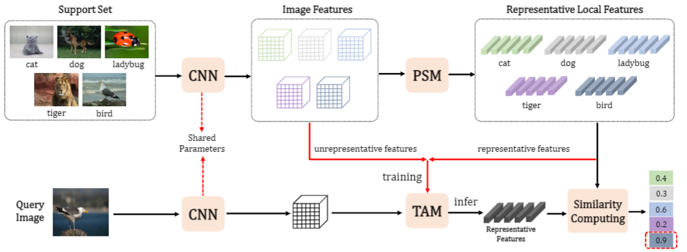
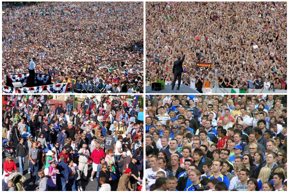

Introduction
RGBT-CC Benchmark
-

Cross-Modal Collaborative Representation Learning and a Large-Scale RGBT Benchmark for Crowd Counting.
Lingbo Liu, Jiaqi Chen, Hefeng Wu, Guanbin Li, Chenglong Li and Liang Lin.
IEEE Conference on Computer Vision and Pattern Recognition (CVPR), 2021. [CCF A]
-

Representative Local Feature Mining for Few-Shot Learning.
Kun Yan, Lingbo Liu, Jun Hou and Ping Wang.
IEEE International Conference on Acoustics, Speech & Signal Processing (ICASSP), 2020. [CCF B]
-

Efficient Crowd Counting via Structured Knowledge Transfer.
Lingbo Liu, Jiaqi Chen, Hefeng Wu, Tianshui Chen, Guanbin Li and Liang Lin.
Proc. of ACM International Conference on Multimedia (ACM MM), 2020. [CCF A]
[PDF] [BibTeX] [Code & Models.]
-

Crowd Counting with Deep Structured Scale Integration Network
Lingbo Liu, Zhilin Qiu, Guanbin Li, Shufan Liu, Wanli Ouyang and Liang Lin.
IEEE International Conference on Computer Vision (ICCV), 2019. [CCF A]
-

Crowd Counting via Multi-View Scale Aggregation Networks
Zhilin Qiu, Lingbo Liu, Guanbin Li, Qing Wang, Nong Xiao and Liang Lin.
IEEE International Conference on Multimedia and Expo (ICME), 2019. [CCF B]
[PDF]
-

Crowd Counting using Deep Recurrent Spatial-Aware Network.
Lingbo Liu, Hongjun Wang, Guanbin Li, Wanli Ouyang and Liang Lin.
Proc. of International Joint Conference on Artificial Intelligence (IJCAI), 2018. [CCF A]
[PDF]
-

Attentive Crowd Flow Machines.
Lingbo Liu, Ruimao Zhang, Jiefeng Peng, Guanbin Li, Bowen Du and Liang Lin.
Proc. of ACM International Conference on Multimedia (ACM MM), Oral，2018. [CCF A]
Architectures
-

Aerial Images Meet Crowdsourced Trajectories: A New Approach to Robust Road Extraction.
Lingbo Liu, Zewei Yang, Kuo Wang, Guanbin Li and Liang Lin.
Submit to IEEE Transactions on Neural Networks and Learning Systems (T-NNLS).
-
Dynamic Convolutional Network for Face Sketch Synthesis in the Wild and A New Benchmark.
Lingbo Liu, Zhilin Qiu, Guanbin Li, Rui Su, Wanli Ouyang and Liang Lin.
-
Cross-Domain Facial Expression Recognition: A Unified Evaluation Benchmark and Adversarial Graph Learning.
Tianshui Chen, Tao Pu, Yuan Xie, Hefeng Wu, Lingbo Liu, Liang Lin.
[PDF] [Code & Dataset]
Preprints